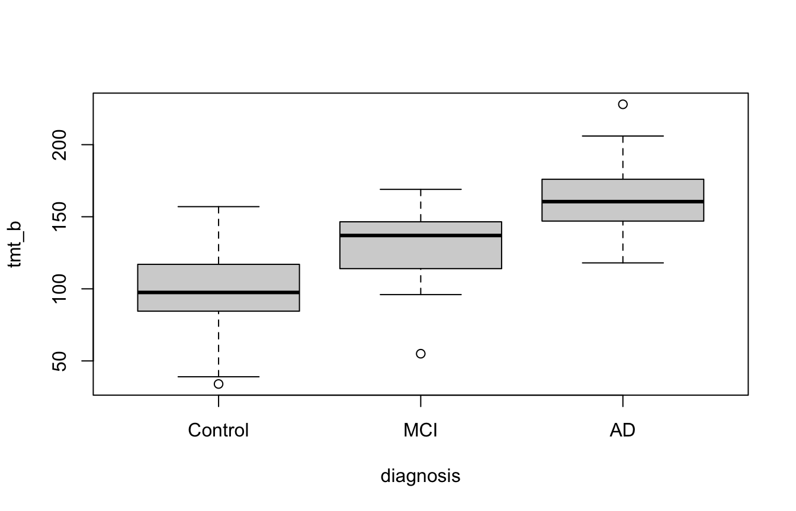
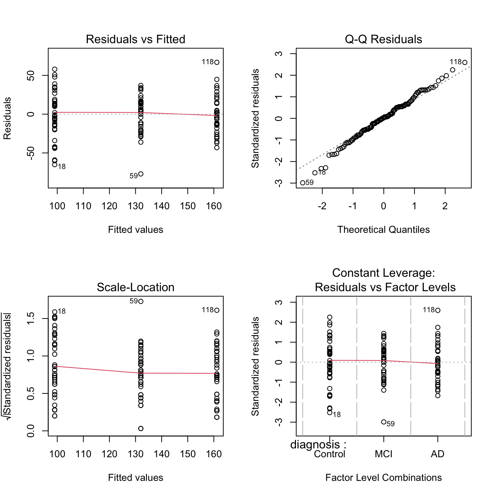
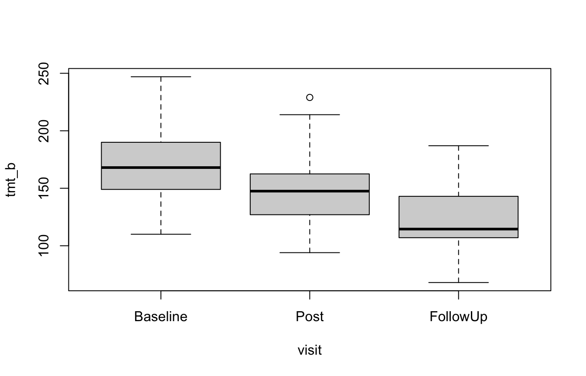
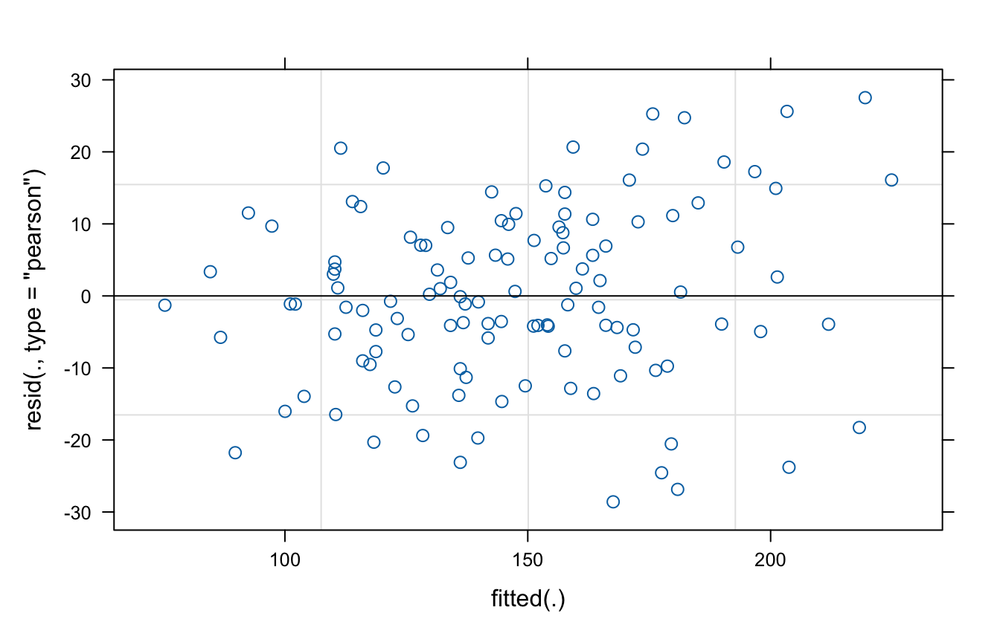
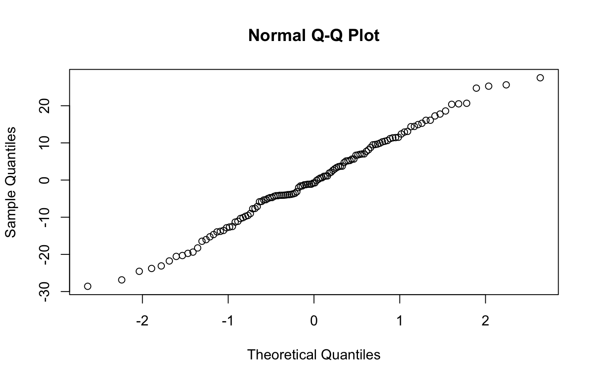

install.packages(c("car", "rstatix", "lme4", "lmerTest"))6 · ANOVA as regression: patient groups and recovery over time
Statistics for brain and cognitive sciences (CN2)
A zip with the R script, the data and an .Rproj. Unzip it and open the .Rproj first, so that data/... paths work.
ANOVA Example: Executive Function in Clinical Groups
Context:
The outcome is the Trail Making Test part B (TMT-B): the patient connects numbers and letters in alternating order as quickly as possible. The score is the time in seconds, so higher means worse. The data are simulated.
You will see:
- A t-test and an ANOVA as linear regressions
- How coding a factor changes what the coefficients mean
- Post-hoc comparisons and assumption checks
- Repeated measures with
aov()andlmer()
If you do not have these packages yet, install them once:
The data: three diagnostic groups
groups <- read.csv("data/tmt-groups.csv")
head(groups)# the first level is the reference group, so put controls first
groups$diagnosis <- factor(groups$diagnosis, levels = c("Control", "MCI", "AD"))
tapply(groups$tmt_b, groups$diagnosis, mean)Control MCI AD
99.025 132.025 161.150 boxplot(tmt_b ~ diagnosis, data = groups)
Part 1: Do MCI patients differ from controls?
The t-test and lm() give the same t (with the sign flipped) and the same p. The slope is the difference between the two group means.
two_groups <- droplevels(subset(groups, diagnosis != "AD"))
t.test(tmt_b ~ diagnosis, data = two_groups, var.equal = TRUE)
Two Sample t-test
data: tmt_b by diagnosis
t = -5.4705, df = 78, p-value = 5.244e-07
alternative hypothesis: true difference in means between group Control and group MCI is not equal to 0
95 percent confidence interval:
-45.00956 -20.99044
sample estimates:
mean in group Control mean in group MCI
99.025 132.025 summary(lm(tmt_b ~ diagnosis, data = two_groups))
Call:
lm(formula = tmt_b ~ diagnosis, data = two_groups)
Residuals:
Min 1Q Median 3Q Max
-77.025 -15.275 2.475 16.225 57.975
Coefficients:
Estimate Std. Error t value Pr(>|t|)
(Intercept) 99.025 4.266 23.21 < 2e-16 ***
diagnosisMCI 33.000 6.032 5.47 5.24e-07 ***
---
Signif. codes: 0 '***' 0.001 '**' 0.01 '*' 0.05 '.' 0.1 ' ' 1
Residual standard error: 26.98 on 78 degrees of freedom
Multiple R-squared: 0.2773, Adjusted R-squared: 0.268
F-statistic: 29.93 on 1 and 78 DF, p-value: 5.244e-07Part 2: Do the three groups differ?
Step 1: Fit the model
lm_mod <- lm(tmt_b ~ diagnosis, data = groups)
summary(lm_mod)
Call:
lm(formula = tmt_b ~ diagnosis, data = groups)
Residuals:
Min 1Q Median 3Q Max
-77.03 -14.37 0.85 15.22 66.85
Coefficients:
Estimate Std. Error t value Pr(>|t|)
(Intercept) 99.025 4.128 23.991 < 2e-16 ***
diagnosisMCI 33.000 5.837 5.653 1.13e-07 ***
diagnosisAD 62.125 5.837 10.643 < 2e-16 ***
---
Signif. codes: 0 '***' 0.001 '**' 0.01 '*' 0.05 '.' 0.1 ' ' 1
Residual standard error: 26.11 on 117 degrees of freedom
Multiple R-squared: 0.4922, Adjusted R-squared: 0.4835
F-statistic: 56.71 on 2 and 117 DF, p-value: < 2.2e-16anova(lm_mod)Step 2: Change the coding
With deviation coding the fit is the same, but the intercept becomes the general mean, and each coefficient is a group’s difference from it. R labels them by level number: diagnosis1 is controls and diagnosis2 is MCI. AD gets no row of its own.
lm_mod_sum <- lm(tmt_b ~ diagnosis, contrasts = list(diagnosis = "contr.sum"),
data = groups)
summary(lm_mod_sum)
Call:
lm(formula = tmt_b ~ diagnosis, data = groups, contrasts = list(diagnosis = "contr.sum"))
Residuals:
Min 1Q Median 3Q Max
-77.03 -14.37 0.85 15.22 66.85
Coefficients:
Estimate Std. Error t value Pr(>|t|)
(Intercept) 130.733 2.383 54.859 < 2e-16 ***
diagnosis1 -31.708 3.370 -9.408 5.4e-16 ***
diagnosis2 1.292 3.370 0.383 0.702
---
Signif. codes: 0 '***' 0.001 '**' 0.01 '*' 0.05 '.' 0.1 ' ' 1
Residual standard error: 26.11 on 117 degrees of freedom
Multiple R-squared: 0.4922, Adjusted R-squared: 0.4835
F-statistic: 56.71 on 2 and 117 DF, p-value: < 2.2e-16mean(groups$tmt_b)[1] 130.7333Step 3: The usual ANOVA, and which groups differ
aov() fits the same model. With a single factor, types I, II and III give the same F for diagnosis.
aov_mod <- aov(tmt_b ~ diagnosis, data = groups)
summary(aov_mod) Df Sum Sq Mean Sq F value Pr(>F)
diagnosis 2 77290 38645 56.71 <2e-16 ***
Residuals 117 79735 681
---
Signif. codes: 0 '***' 0.001 '**' 0.01 '*' 0.05 '.' 0.1 ' ' 1car::Anova(aov_mod, type = 2)car::Anova(aov_mod, type = 3)TukeyHSD(aov_mod) Tukey multiple comparisons of means
95% family-wise confidence level
Fit: aov(formula = tmt_b ~ diagnosis, data = groups)
$diagnosis
diff lwr upr p adj
MCI-Control 33.000 19.14262 46.85738 3.0e-07
AD-Control 62.125 48.26762 75.98238 0.0e+00
AD-MCI 29.125 15.26762 42.98238 6.3e-06Step 4: Diagnostics
par(mfrow = c(2, 2))
plot(aov_mod)
dev.off()car::leveneTest(aov_mod) # equality of variances across groupsPart 3: Do stroke patients improve with rehabilitation?
The same 40 patients do the TMT-B at three visits, so the file has one row per patient per visit. Some patients are faster than others at every visit, and a repeated-measures model separates that from the change over time.
rehab <- read.csv("data/tmt-rehab.csv")
head(rehab)rehab$patient <- factor(rehab$patient)
rehab$visit <- factor(rehab$visit, levels = c("Baseline", "Post", "FollowUp"))
tapply(rehab$tmt_b, rehab$visit, mean)Baseline Post FollowUp
170.400 148.875 123.050 boxplot(tmt_b ~ visit, data = rehab)
Step 1: Repeated-measures ANOVA
Ignoring the repeated measures leaves the differences between patients in the error term, which gives a much weaker F. Error(patient/visit) removes them.
summary(aov(tmt_b ~ visit, data = rehab)) # wrong: treats visits as independent Df Sum Sq Mean Sq F value Pr(>F)
visit 2 44964 22482 24.91 9.68e-10 ***
Residuals 117 105574 902
---
Signif. codes: 0 '***' 0.001 '**' 0.01 '*' 0.05 '.' 0.1 ' ' 1summary(aov(tmt_b ~ visit + Error(patient/visit), data = rehab)) # right
Error: patient
Df Sum Sq Mean Sq F value Pr(>F)
Residuals 39 88718 2275
Error: patient:visit
Df Sum Sq Mean Sq F value Pr(>F)
visit 2 44964 22482 104 <2e-16 ***
Residuals 78 16856 216
---
Signif. codes: 0 '***' 0.001 '**' 0.01 '*' 0.05 '.' 0.1 ' ' 1# same analysis, with Mauchly's test of sphericity
rstatix::anova_test(data = rehab, dv = tmt_b, wid = patient, within = visit)ANOVA Table (type III tests)
$ANOVA
Effect DFn DFd F p p<.05 ges
1 visit 2 78 104.036 9.75e-23 * 0.299
$`Mauchly's Test for Sphericity`
Effect W p p<.05
1 visit 0.961 0.47
$`Sphericity Corrections`
Effect GGe DF[GG] p[GG] p[GG]<.05 HFe DF[HF] p[HF]
1 visit 0.962 1.92, 75.07 5.64e-22 * 1.011 2.02, 78.89 9.75e-23
p[HF]<.05
1 *Step 2: Mixed-effects model
(1 | patient) gives each patient their own baseline level. Each visit coefficient is the change from baseline, in seconds.
library(lme4)Loading required package: Matrixlibrary(lmerTest) # load this to get p-values in lmer
Attaching package: 'lmerTest'The following object is masked from 'package:lme4':
lmerThe following object is masked from 'package:stats':
steplmer_mod <- lmer(tmt_b ~ visit + (1 | patient), data = rehab)
summary(lmer_mod)Linear mixed model fit by REML. t-tests use Satterthwaite's method [
lmerModLmerTest]
Formula: tmt_b ~ visit + (1 | patient)
Data: rehab
REML criterion at convergence: 1063.9
Scaled residuals:
Min 1Q Median 3Q Max
-1.9447 -0.4933 -0.0537 0.6091 1.8725
Random effects:
Groups Name Variance Std.Dev.
patient (Intercept) 686.2 26.2
Residual 216.1 14.7
Number of obs: 120, groups: patient, 40
Fixed effects:
Estimate Std. Error df t value Pr(>|t|)
(Intercept) 170.400 4.750 54.248 35.877 < 2e-16 ***
visitPost -21.525 3.287 78.000 -6.548 5.62e-09 ***
visitFollowUp -47.350 3.287 78.000 -14.405 < 2e-16 ***
---
Signif. codes: 0 '***' 0.001 '**' 0.01 '*' 0.05 '.' 0.1 ' ' 1
Correlation of Fixed Effects:
(Intr) vstPst
visitPost -0.346
visitFllwUp -0.346 0.500# proportion of the remaining variance due to differences between patients
vars <- as.data.frame(VarCorr(lmer_mod))
vars$vcov[1] / (vars$vcov[1] + vars$vcov[2])[1] 0.7605144plot(lmer_mod) # residuals vs fitted
qqnorm(residuals(lmer_mod)) # normality of residuals